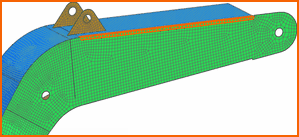
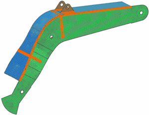
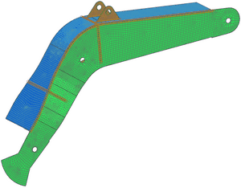

更改沿焊接线的单元厚度
 修改单元相关数据(单元操作工具条)
修改单元相关数据(单元操作工具条)
|
注释 |
您可能需要先打开单元操作工具条。 |
-
类型
壳

-
方法
相关的单元
提示
方法列表
 位于工具条区域的选择条上。
位于工具条区域的选择条上。 -
类型过滤器(选择条)
多边形边
-
 组件 BOOM_RIGHT 与组件 BOOM_TOP 之间的边
组件 BOOM_RIGHT 与组件 BOOM_TOP 之间的边

-
继续选择沿焊接线的多边形边，如图所示：

-
拐角节点厚度
-
无更改
-
 设置
设置 -
厚度
60 mm
-
仅为选定的节点定义厚度
-
节点
-
方法(选择条)
特征边节点
-
选择一个沿其中一条焊接线的单元边，完成选择单元边后，注意到所有位于边上的节点都将被选中，继续选择其它焊接线上的单元边，直到所有沿焊接线的节点都已被选择。

-
确定
|
提示 |
这个练习里表示焊接线的单元在大小上会有一些变化，要想单元大小一致，您需要拆分理想化部件中的体。 |